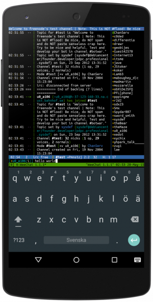

Termux es una aplicación que podemos instalar desde F-Droid con la que podemos correr una distro Linux dentro de Android.

Vamos a ver muchas de las posibilidades disponibles para poder correr nuestro scripts favoritos dentro de Android.
Para acceder al almacenamiento de directorios de nuestro movil android, tenemos que dar permisos a termux para acceder. Lo haremos del siguiente modo:
Vamos ha hacer un ls para listar todos nuestro archivos y directorios:
Termux no sigue el estándar de jerarquía a diferencia de la mayoría de las distribuciones de Linux. No puede encontrar directorios como /bin, /etc, /usr, /tmp y otros en las ubicaciones habituales.
Para los scripts con #!/bin/sh es posible que sea necesario ejecutar:
Las últimas versiones traen un paquete termux-exec que permite el uso de she-bangs estándar.
Termux-exec permite ejecutar scripts con shebangs para estructuras de archivos Unix tradicionales. Así que shebangs como #!/bin/sh=y =#!/usr/bin/env python deberían poder ejecutarse sin termux-fix-shebang.
Si quieres que un script se ejecute en la ruta /usr/bin o simplemente quieres disponer de la estructura de directorios clásicos, ejecuta los siguientes comandos:
Ahora si hacemos un ls, veremos la estructura
Es posible utilizar cron en termux. Para ello instalaremos el siguiente paquete.
Usa crontab como de costumbre en cualquier Linux, pero algunas limitaciones en caso de que Android mate y no deje correr en segundo plano la aplicación termux, si no es así, crontab funciona muy bien.
Abre el editor de texto predeterminado y escribe Por ejemplo :
Este trabajo cron se ejecuta cada minuto y crea ese directorio.
Si tienes dudas de como crear crontabs, visita la web, https://crontab.guru/
Ahora llega una de mis partes favoritas. No me digas que todos mis scripts los puedo utilizar en Android gracias a Termux y utilizando la camara, geolocalización, tts, agenda,…
Descarga el complemento Termux:API de F-Droid o Google Play Store.
Para usar Termux:API también necesita instalar el termux-api .
Si compartimos un enlace con termux, termux ejecutará el script ~/bin/termux-url-opener y añadirá aquello que compartamos en la variable $1.
Así que en el script termux-url-opener tendremos que crear un menú o procesar aquello que compartamos.
Hay que crear el directorio ~/bin con el archivo dentro termux-url-opener y darle permisos de ejecución, si no no funcionará, con chmod +x.
Termux es capaz de capturar varios intentos y ejecutar scripts de shell para actuar sobre ellos:
Se ejecutará el siguiente identificador: ~/bin/termux-file-editor
ln -s $PREFIX/bin/nvim ~/bin/termux-file-editor
nano ~/bin/termux-file-editor)chmod +x ~/bin/termux-file-editor)Se ejecutará el siguiente identificador: ~/bin/termux-url-opener
Puede manejar la URL entrante editando el contenido.\ yoursth-dl -f 'bestvideo[ext=mp4][height<=720]+bestaudio' --restrict-filenames -o '~/storage/downloads/%(title)s-%(id)s.%(ext)s' $1
Fuente: Intenciones y Hooks - Termux Wiki
Si ejecutamos termux-dialog en la terminal, nos abrirá un cuadro de dialogo, para introducir algún valor, texto, etc….
Puedes mostrar un texto en pantalla. Hay muchas opciones de color, etc… Si quieres profundizar visita la wiki de termux en https://wiki.termux.com/wiki/Termux-toast.
Un ejemplo de mostrar un mensaje sería:
Podemos enviar Notificaciones a nuestro Android con:
Hay muchísimas más opciones para profundizar en la wiki
Reproduce un audio o video con:
Opciones:
info Displays current playback information
play Resumes playback if paused
play file Plays specified media file
pause Pauses playback
stop Quits playbackOpciones: ### Options
-d Start recording w/ defaults
-f file Start recording to specific file
-l limit Start recording w/ specified limit (in seconds, unlimited for 0)
-e encoder Start recording w/ specified encoder (aac, amr_wb, amr_nb)
-b bitrate Start recording w/ specified bitrate (in kbps)
-r rate Start recording w/ specified sampling rate (in Hz)
-c count Start recording w/ specified channel count (1, 2, ...)
-i Get info about current recording
-q Quits recordingPegar en terminal el contenido que hay en el portapales:
Sabéis que me encanta el tts. No hay nada mejor que la voz de google como tts.
Optiones
-e engine TTS engine to use (see termux-tts-engines)
-l language language to speak in (may be unsupported by the engine)
-n region region of language to speak in
-v variant variant of the language to speak in
-p pitch pitch to use in speech. 1.0 is the normal pitch,
lower values lower the tone of the synthesized voice,
greater values increase it.
-r rate speech rate to use. 1.0 is the normal speech rate,
lower values slow down the speech
(0.5 is half the normal speech rate)
while greater values accelerates it
(2.0 is twice the normal speech rate).
-s stream audio stream to use (default:NOTIFICATION), one of:
ALARM, MUSIC, NOTIFICATION, RING, SYSTEM, VOICE_CALLDescarga el complemento de en F-Droid
Es un de complemento de Termux para ejecutar scripts en Termux con accesos directos y widgets del iniciador.
Los scripts que dejemos en la ruta ~/.shortcuts/, se visualizará en el Widget.
Las tareas que se ejecutaran, están en la ruta ~/.shortcuts/tasks
los iconos se almacenan en ~/.shortcuts/icons que se usará para un script cuando se cree un acceso directo del iniciador para la versión > 0.12=. El nombre del archivo del icono debe ser igual a <script_name>.png, por ejemplo script.sh.png. Para 1080p ~6in=pantalla, algo como =96x96px =png=el archivo probablemente debería estar bien, de lo contrario intente =144px=o =196px=para pantallas de mayor resolución.
Termux tiene algunas características adicionales. Puede agregarlos instalando complementos:
Acceda a las funciones de hardware de Android y Chrome.
Ejecute secuencias de comandos cuando arranque su dispositivo.
Ejecute Termux en una ventana flotante.
Haga que los esquemas de color y las fuentes preparadas para la línea eléctrica personalicen la apariencia del terminal Termux.
Una manera fácil de llamar a los ejecutables de Termux desde Tasker y aplicaciones compatibles.
Publicado por Angel el Friday 25 March del 2022
También te puede interesar:
Powered by org-bash-blog
Written in OrgMode with Emacs and converted to HTML with Pandoc

Este obra está bajo una licencia de Creative Commons Reconocimiento-NoComercial-CompartirIgual 4.0 Internacional.